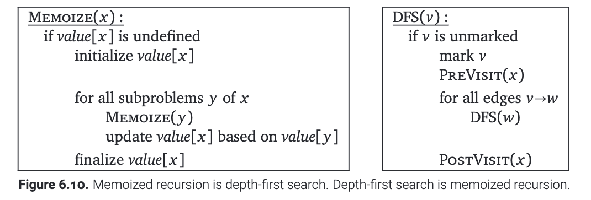
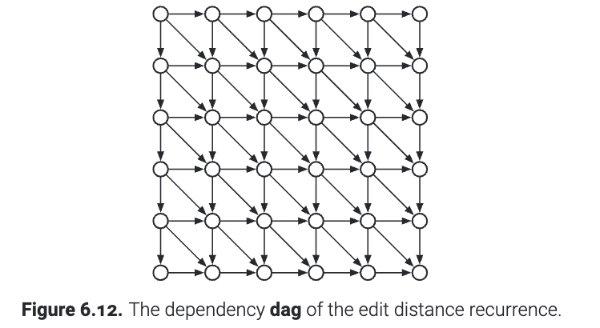
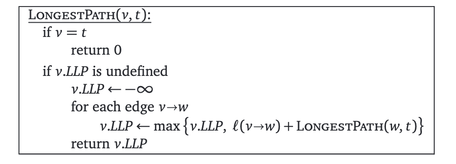
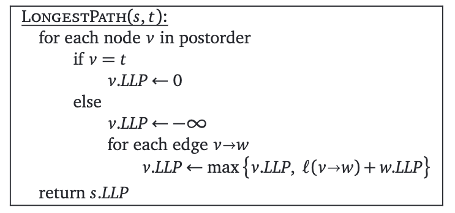

我们上节课介绍的拓扑排序算法有极其重要的地位. 它可以说是一类广泛的动态规划算法的基本模型. 回想一下递归的依赖图(dependency graph), 这个图里面对每一个子问题都建立了一个节点. 而且, 如果我们要在求解子问题A的时候需要调用子问题B, 那么A和B之间会连一条有向边. 这个依赖图必须是无环的的, 否则我们的递归算法将永远不会停止.
使用记忆化的方法来记录重复子问题的过程, 与对依赖图的深度优先搜索完全相同. 这就是说, 如果相应子问题的值已经计算出来了, 则依赖图的顶点就会被“标记”. 那些被放在"黑盒"里面的过程, 诸如PreVisit, PostVisit, 就是实际值计算的过程. 就像下图展示的一样.

把这样的一个类比说得更广泛些, 就是: 使用动态规划 求解某些递归问题, 与在依赖图中以拓扑顺序倒序处理某些递归问题完全相同! 因为我们只有在一个问题 \(x\) 所依赖的子问题被计算完成后, 才考虑计算 \(x\) 的值. 因此, 每个动态规划算法都等价于在它隐藏的状态依赖图中做了一次后序遍历!
但是, 大多数动态规划算法和拓扑排序之间存在一些细微的差异. 首先, 在大多数动态规划的算法中, 依赖图没有明确地给出. 节点和边没有直接存储在内存中, 转而它们在循环/递归的时候由程序的控制流决定. 但这种差异确实很小. 只要我们能够枚举递归的子问题, 我们就可以像直接把它们存储在像邻接表中这样的数据结构中, 进而生成递归问题的依赖图.
更重要的是, 大多数使用动态规划求解的问题中, 问题的依赖图都更加有条理. 比如在第5章, "编辑距离"这个问题的依赖关系就是加了对角线的方格图(如下所示). "最优二叉树"问题中, 依赖关系就是带有所有的向右、向上边的上三角网格. 这种规则的结构允许我们将合适的求值顺序直接写死到算法中: 一般来讲用一些嵌套的循环, 因此没有必要在运行时对依赖图进行拓扑排序. 我们之前将逆拓扑顺序称为求值顺序(evaluation order).

我们可以转而使用深度优先搜索来为依赖图不那么复杂的问题构建动态规划的算法. 举个例子, 考虑最长路径(longest path)问题. 这个问题中, 我们要在一个带权重的有向图中找到从起点 \(s\) 到终点 \(t\) 的最长的路径. 在一般的有向图中, 最长的路径这个问题是NP-hard的, 但是如果我们输入的图能保证没有环, 那么我们就可以线性时间求解出这个距离.
固定目标节点 \(t\) , 并且对于任意节点 \(v\) , 令 \(LLP(v)\) 表示从 \(v\) 到 \(t\) 的最长路径(Length of Longest Path). 如果 \(G\) 是DAG, 那么它一定满足下面的递归式: $$ L L P(v)= \begin{cases}0 & \text { if } v=t \\ \max \{\ell(v \rightarrow w)+L L P(w) \mid v \rightarrow w \in E\} & \text { otherwise }\end{cases} $$ 其中 \(\ell(v \rightarrow w)\) 表示从 \(v\) 到 \(w\) 的边的权重. 并且为了方便起见, \(\max \varnothing=-\infty\) . 特别地, 如果 \(v\) 是汇点, 但是 \(v\neq t\) , 那么 \(LLP(v)=-\infty\) .
这个递归的依赖图是输入图 \(G\) 本身: 如果 \(v\to w\) 是图 \(G\) 的一条边的话, \(LLP(v)\) 就依赖于子问题 \(LLP(w)\) . 因此, 我们可以在 \(O(V+E)\) 的时间内求解这个问题. 也就是从 \(s\) 开始深度优先遍历一次图 \(G\) 即可. 该算法将每个长度 \(LLP(v)\) 记忆到相应节点 \(v\) 中的额外的一个标签中.

原则上, 我们可以通过拓扑排序将这种记忆化的递归算法转化为动态规划算法:

这两种算法可以说是完全相同的: 第一个算法中的递归和第二个算法中的for循环代表相同的意思! 他们都是进行深度优先搜索! 选哪种实现都没有太大影响.
几乎任何要得到到达最优决策的过程的动态规划问题都可以被改写为在对应的 DAG 中寻找最优路径. 比如, 我们在第二章和第三章考虑过的问题, 诸如文本分割、子集和、最长递增子序列和编辑距离问题都可以重新表述为在 DAG 中查找最长路径或最短路径. 每种情况下, 问题中隐含的DAG图正是我们要抓住的地方. 另一方面，树形的动态规划问题(例如寻找最优二叉搜索树或树中的最大独立集) 不能被定义为在 DAG 中寻找最优路径.